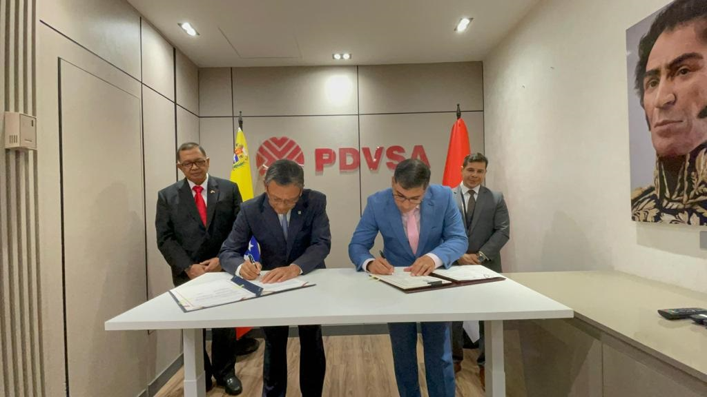

Contoh Kerjasama Bilateral: Indonesia dan Venezuela Salah satu contoh kerja sama bilateral yang mendukung pencapaian Tujuan 4 adalah antara Indonesia dan Venezuela dalam pengembangan pendidikan. Melalui berbagai program dan inisiatif, kedua negara telah berkomitmen untuk meningkatkan kualitas pendidikan melalui pertukaran budaya, program beasiswa, dan pelatihan guru. Manfaat Kerjasama Bilateral dalam Pendidikan: Peningkatan Kualitas Guru: Pelatihan dan pendidikan berkelanjutan bagi guru dari kedua negara membantu meningkatkan metode pengajaran dan kualitas pendidikan. Beasiswa: Program beasiswa memungkinkan siswa dari Indonesia dan Venezuela untuk melanjutkan pendidikan tinggi di negara masing-masing, yang berkontribusi pada peningkatan sumber daya manusia. Pertukaran Budaya: Pertukaran budaya dan pengalaman antara pelajar dan pendidik dari kedua negara membantu menciptakan pemahaman yang lebih baik dan memperkaya perspektif pendidikan. Pengembangan Kurikulum: Kerjasama dalam pengembangan kurikulum membantu menciptakan materi pelajaran yang relevan dan sesuai dengan standar internasional. Kerjasama bilateral ini menunjukkan bagaimana Indonesia dan Venezuela dapat bekerja sama untuk mencapai tujuan bersama dalam meningkatkan pendidikan dan kesejahteraan masyarakat. Dengan adanya dukungan internasional, diharapkan pendidikan berkualitas dapat diakses oleh lebih banyak orang, sehingga memberikan dampak positif yang berkelanjutan bagi masyarakat. 
Diambil dari https://resourcesasia.id/indonesia-dan-venezuela-teken-kerjasama-bidang-migas/
Kerja sama bilateral antara Indonesia dan Venezuela terus berkembang, terutama di sektor minyak dan gas. Nota Kesepahaman (MoU) yang ditandatangani oleh Menteri Energi dan Sumber Daya Mineral Indonesia, Arifin Tasrif, dan Menteri Perminyakan Venezuela, Pedo Rafael Tellechea, menjadi tonggak penting dalam hubungan kedua negara. Secara keseluruhan, kerja sama ini menandai langkah maju yang signifikan dalam hubungan bilateral Indonesia dan Venezuela. Dengan fokus pada inovasi teknologi, keberlanjutan lingkungan, dan peningkatan produksi energi, kedua negara diharapkan dapat mencapai hasil yang menguntungkan bagi kedua belah pihak.